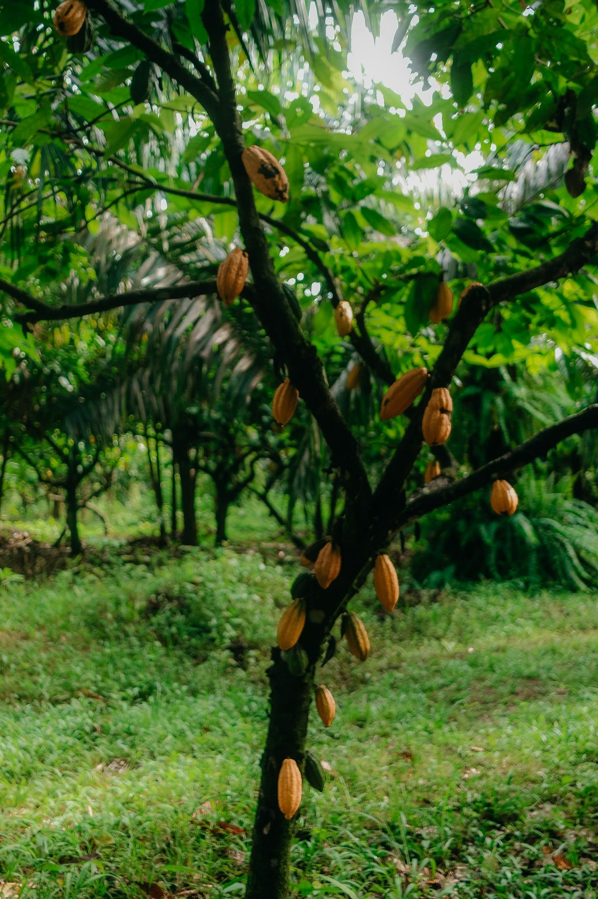
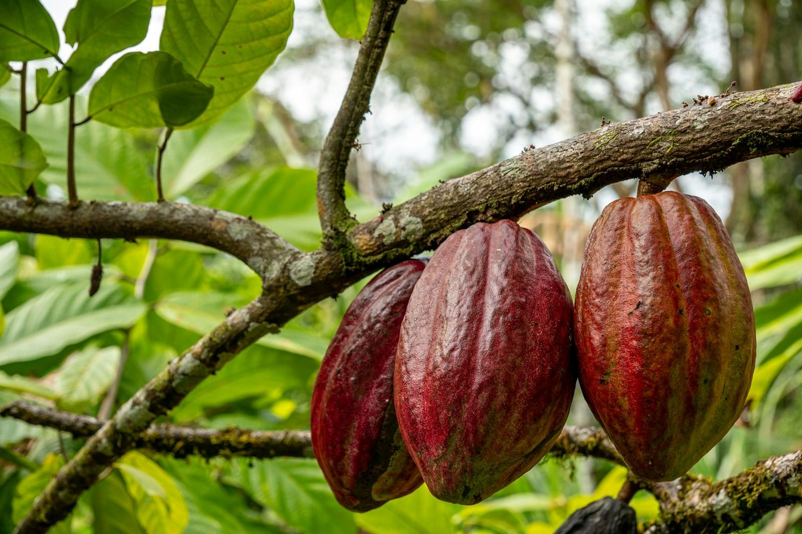
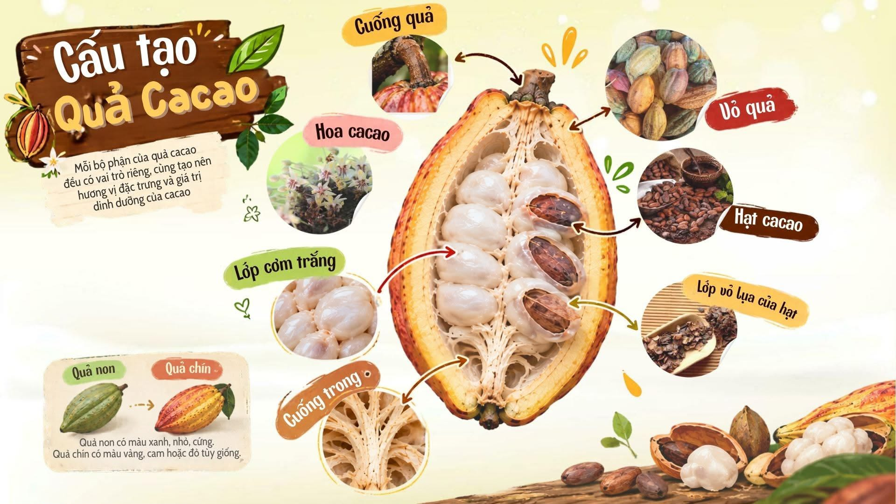
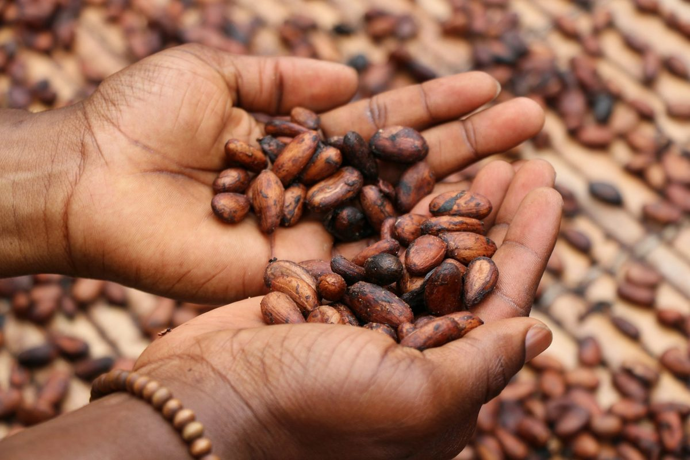

Khởi nguồn từ đất đỏ bazan
Nắng, gió và đất đỏ.
Đất đỏ bazan giàu khoáng, nắng gió cao nguyên rõ mùa — những điều làm nên vị cacao đậm và nguyên bản của Bazan Cacao.
Đoạn khởi nguồn đầy đủ: lấy nguyên văn từ báo cáo Chapter 1–2.

Sản phẩm cacao nguyên bản, ít đường, an lành; kinh tế tuần hoàn, tái sinh phụ phẩm, nuôi dưỡng rừng xanh; nâng tầm nông sản Việt.
Thương hiệu cacao xanh hàng đầu; đến 2030 đưa cacao tuần hoàn Việt vươn tầm xuất khẩu (Châu Á, Châu Âu, Bắc Mỹ).
Bốn điều chúng tôi giữ
Nguyên bản
Bền vững
An lành
Nâng tầm nông sản
Mỗi bộ phận, một vai trò
Từ cuống, vỏ quả, lớp cơm trắng đến hạt và lớp vỏ lụa — mỗi phần đều góp vào hương vị và giá trị của cacao.

Chạm để xem ảnh lớnTừ đất, trở về đất.
Mỗi bộ phận của quả cacao đều có một con đường để được dùng đến.
Trồng
Cây cacao lớn lên trên đất đỏ bazan.
Thu hoạch
Hái quả chín, tách lấy hạt.
Lên men & sấy
Hạt được lên men, phơi dưới nắng gió.
Rang & tách vỏ lụa
Vỏ lụa được giữ lại, chẳng hạn làm trà.
Chế biến
Hạt thành bột cacao, socola.
Trả lại cho đất
Vỏ quả, phụ phẩm ủ thành phân, nuôi rừng.
Các bước cần khách hàng xác nhận theo quy trình thực tế.
Ít đường, rõ ràng, an lành.
- Cacao nguyên bản, không pha trộn tạp chất
- Ít đường, nhãn thành phần ngắn gọn (clean label)
- Tái sinh phụ phẩm, không bỏ phí
- Chứng nhận / tiêu chuẩn: CẬP NHẬT

Mỗi Hạt – Một Mầm Xanh
Một phần doanh thu từ mỗi sản phẩm được trích cho quỹ trồng rừng.
Những người làm nên một vị
Họ tên
Vai trò
Họ tên
Vai trò
Họ tên
Vai trò
Họ tên
Vai trò